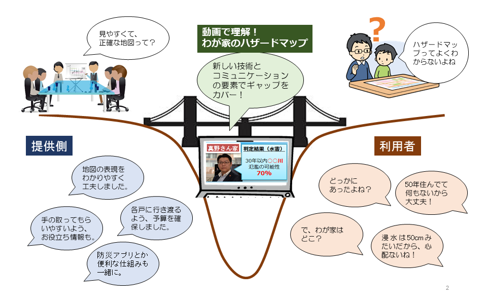
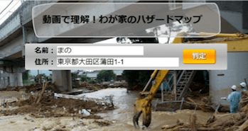
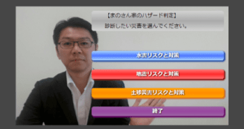
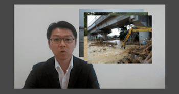
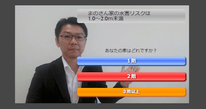
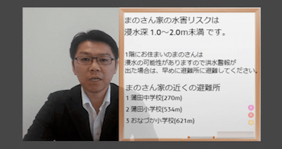
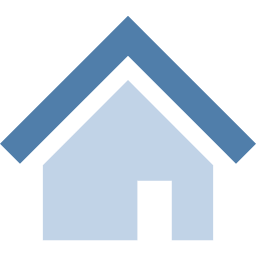
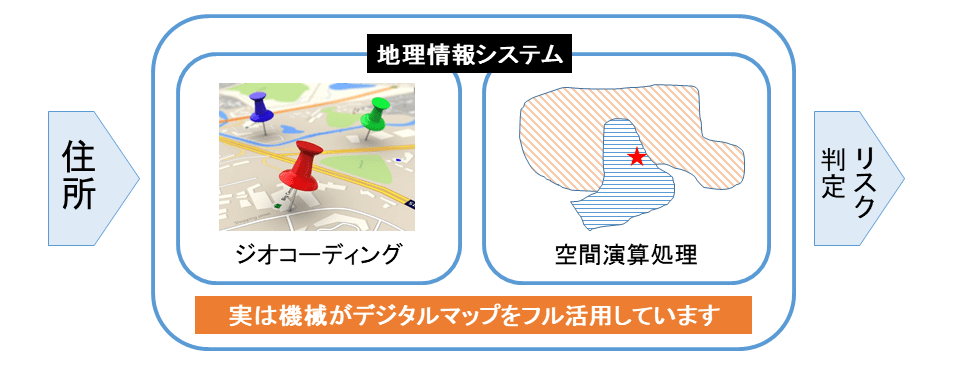
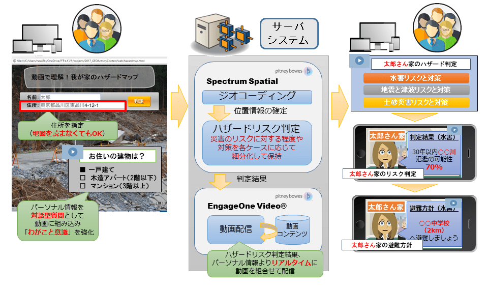
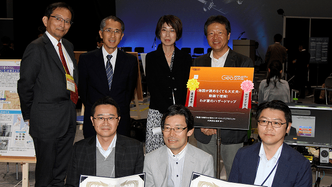

-
ホーム
-
製品 / サービス
-
動画で理解！わが家のハザードマップ

近年、自治体の手により制作されたハザードマップが存在するにもかかわらず、災害リスクが住民に十分に認識されないまま、風水害で人命や財産が奪われるというニュースをしばしば目にします。
自治体や地図制作者などの提供側からは、ハザードマップの内容をわかりやすくしたり、十分な告知を行っているはずです。その一方で、受け手側の住民にとっては、ハザードマップの内容を的確に読み解けず、リスク情報が的確に伝わらないこともあります。また、「根拠のない安全の思い込み」によって、リスク情報を得ながらも的確な避難に繋がらないという課題も見られます。
本システムは「対話型パーソナライズド動画」という新しい技術を活用して、立地によって異なる避難情報を各戸専用の動画で読み聞かせて災害リスクや避難情報を提供し、災害リスクを「わがこと」として意識付けを行う地理情報システムです。ハザードマップの内容を十分に読み解くことが難しい情報弱者でも、災害リスクを理解し、災害への正しい対応を促すことを目指します。
一般的な動画の流れ

① ウェブサイトへアクセス判定場所の住所を入力

② 見たい災害リスクをリストから選択

③ 災害時に注意すべき点全般を専門家から案内

④ リスクの判定とともに、建物の状況を選択して対策の案内へ

⑤ 立地と建物状況から総合的にリスクを判定し、近隣の避難所を案内
人の代わりに機械が地図を読む
情報を地図から正確に読み取り、専門家の監修により正しい対策を提供。

わが家のリスクに特化した結論
その土地や建物特有のリスクを前提にするため「わがこと」意識が高まる。
人が動画で語りかける
機械の冷たい対応とは違い、つい最後まで見てしまい視聴率がアップ。
対話型で反応を返せる
自ら選択した関心あるテーマを視聴することにより、視聴率がアップ。
専門家に自身の災害リスクと対応を語りかけてもらえるので、
情報弱者や無関心層にも有効
特徴
- 地図が読めない人でも直感的にリスクを理解してもらえる
- 高齢者/外国人/障害者などの情報弱者にも伝えられる
- 紙媒体から遠ざかりがちな若者層に対する情報提供として最適
- スマホの位置情報活用により観光客などへの情報提供が容易
- 転入者に対して転入時オリエンテーションの内容向上・人手不足対策
- 対話型の構成により、視聴者の属性を取得可能で、災害対策への活用が期待できる
- リスク情報の修正など最新情報の反映が容易
- 紙のハザードマップ配布解消による紙資源消費とコスト削減
- 水害、地震、土砂災害など、異なるリスクを同一メニューで解説
こういう方におすすめ
自治体
動画を活用して、もう一歩踏み込んだリスク情報の提供を実現
- ハザードマップを作成して全戸配布しているが、本当にリスクが伝わっているのか心配。
- 転入者などの、地理的な知識がない住民に対して効果的にリスク情報を伝えられます。
- 地図が苦手な高齢者や無関心層に対して、誰でも分かる動画を通じてメッセージが伝えられます。
- 学校や地域での防災教育の教材として、受け手に応じた様々なレベルで動画を提供できます。
- 自治体と住民の日常的なコミュニケーションツールとして対話型パーソナライズド動画を活用した上で、災害時の情報提供チャンネルとしても運用できます。
不動産
お客様に的確にリスクを理解していただいた上で、物件の紹介を行う
- 物件販売時に必要な事前説明において、動画を活用してわかりやすく効果的な情報提供を行うことができます。
- 地域リスクに応じたオプションや保険商品などのアップセルにつながる情報を動画を通じて提供できます。
保険
地域によって異なる災害リスクに応じた損害保険商品の提案
- 土地条件に応じたリスクを動画で伝えることで、特約などのアップセルを導く販売促進を行うことができます。
技術ポイント
Point 1
ハザードマップですが、地図は出てきません。
進化したハザードマップが将来は主流となることでしょう。

-
一般図：ドライブマップはカーナビに進化
-
主題図：ハザードマップが対話型動画に進化
Point 2
「対話型パーソナライズ動画」というコンセプト
新しい技術により高いレベルの情報提供が実現。
従来型の動画
- いつ、どこで、誰がどのデバイスで見ようと同じ動画。
- 個別性はない。
パーソナライズド動画
- 個別のビデオ内容を視聴できるが、情報の収集・対話はできずスケールしにくい。
- 細かな説明に不向き。
対話式パーソナライズド動画
- 個別でユニークな視聴シナリオ展開があり、対話性がある。
- 視聴者からの情報収集が可能。
| パーソナライズ |
視聴者ごとの情報を動画上に表示 |
| 条件分岐 |
視聴者によって動画コンテンツを変え、最適なビデオを提供 |
| インタラクティブ操作 |
動画内の任意の箇所で、顧客がコンテンツを選択。文字を入力。 |
Point 3
「対話型パーソナライズ動画」システムの構成
GIS、動画配信からなるシステムはクラウド運用も可能。

※本システムは、株式会社NTTデータCCSと共同にて特許取得の申請中です。
関連情報
本製品は楽しいチリビジをはじめ、以下の各社の協力で開発しました。
- 株式会社楽しいチリビジ
- 株式会社NTTデータCCS（システム設計）
- ピツニーボウズジャパン株式会社（基幹ソフトウェア提供）
- 静岡大学 情報学部 行動情報学科 井ノ口 宗成 講師（監修）
デモサイト
G空間EXPO 2017「Geoアクティビティコンテスト」

2017年10月に開催されたG空間EXPO 2017にて開催された「Geoアクティビティコンテスト」にて、来場者賞＆デザイン賞をダブル受賞いたしました。
「動画で理解！わが家のハザードマップ」に関するご質問は、お問い合わせフォームからお送り下さい。
オンラインでアクセス可能なデモサイトのご紹介など可能です。